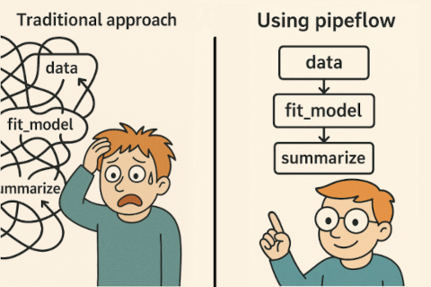

{pipeflow} is a lightweight framework for building interactive data analysis pipelines in R. You add R functions one by one as steps, tell {pipeflow} which steps they take their inputs from, and it keeps the pipeline consistent as you insert, replace or remove steps.

Why pipeflow?
- concise API: steps are plain R functions
- all parameters in one place
- checked as you build
- reruns only what changed
- fast: data.table and C++ DAG under the hood
- feature rich: views, split/map/reduce, nested pipelines
Installation
# Install release version from CRAN
install.packages("pipeflow")
# Install development version from GitHub
devtools::install_github("rpahl/pipeflow")Usage
library(pipeflow)
p <- pip_new("demo") |>
pip_add("numbers", \(n = 5) seq_len(n)) |>
pip_add("squared", \(x = ~numbers) x^2) |>
pip_add("total", \(x = ~squared) sum(x))
p
# <pipeflow> demo (3 steps)
# -------------------------
# step params depends state
# 1: numbers n new
# 2: squared x numbers new
# 3: total x squared new
# -------------------------
# <ready> last run: never
pip_run(p)
# info [2026-10-15 10:21:00.423 UTC]: Starting run of pipeflow 'demo'
# info [2026-10-15 10:21:00.424 UTC]: Step 1/3 numbers
# info [2026-10-15 10:21:00.426 UTC]: Step 2/3 squared
# info [2026-10-15 10:21:00.428 UTC]: Step 3/3 total
# info [2026-10-15 10:21:00.429 UTC]: Finished run of pipeflow 'demo'
pip_collect(p)
# $numbers
# [1] 1 2 3 4 5
#
# $squared
# [1] 1 4 9 16 25
#
# $total
# [1] 55